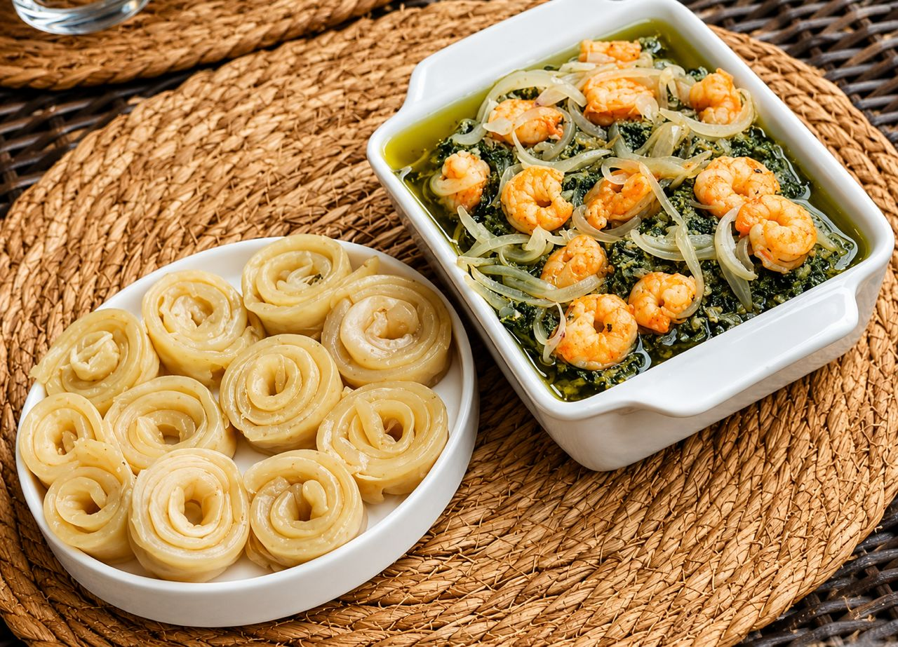

01
Ndolé
Ndolé — Cameroon’s National Stew

Description · FR
Le ndolé est l’un des plats les plus célèbres du Cameroun. Originaire du peuple Sawa, préparé à base de feuilles de ndolé, d’arachides et de viande ou de poisson, ce plat offre un mélange unique de saveurs qui fait la fierté de la cuisine camerounaise.
Description · EN
Ndolé is one of Cameroon’s most celebrated dishes. Originating with the Sawa people, it is made with ndolé leaves, groundnuts and meat or fish — a unique blend of flavours that is the pride of Cameroonian cuisine.
Ingrédients
Ingredients
500 g feuilles de ndolé500 g ndolé leaves
300 g viande de bœuf300 g beef
200 g crevettes200 g shrimp
200 g poisson fumé200 g smoked fish
150 g pâte d’arachide150 g peanut paste
1 gros oignon, 2 gousses d’ail1 large onion, 2 garlic cloves
4 c.à.s. huile végétale4 tbsp vegetable oil
Sel, poivre, eauSalt, pepper, water
Préparation
Method
- 1Laver soigneusement les feuilles de ndolé, les faire bouillir quelques minutes pour réduire l’amertume. Égoutter et réserver.
- 2Faire cuire la viande avec l’oignon, l’ail, le sel et le poivre jusqu’à ce qu’elle soit tendre.
- 3Incorporer le poisson fumé et les crevettes à la viande ; laisser cuire quelques minutes.
- 4Délayer la pâte d’arachide dans un peu d’eau et l’ajouter à la préparation. Mélanger soigneusement.
- 5Ajouter les feuilles de ndolé, laisser mijoter à feu doux ~30 min. Ajouter l’huile et ajuster l’assaisonnement.
- 1Wash the ndolé leaves thoroughly, then boil briefly to reduce bitterness. Drain and set aside.
- 2Cook the beef with onion, garlic, salt and pepper until tender.
- 3Add the smoked fish and shrimp to the meat; cook a few more minutes.
- 4Dissolve the peanut paste in a little water and stir it into the pot.
- 5Add the ndolé leaves, simmer on low ~30 min. Add oil and adjust seasoning to taste.
🍳 Accompagnements recommandés
🍳 Recommended Sides
- Plantains mûrs frits
- Fried ripe plantains
- Miondo
- Bobolo
- Riz blanc
- White rice
Téclaire WritesPour un ndolé encore plus savoureux, faites blanchir les feuilles deux fois et utilisez du beurre de cacahuète naturel.For an even richer ndolé, blanch the leaves twice and use natural peanut butter.